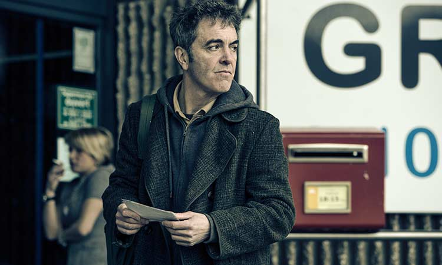
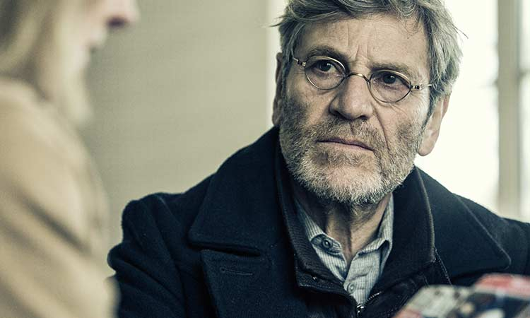
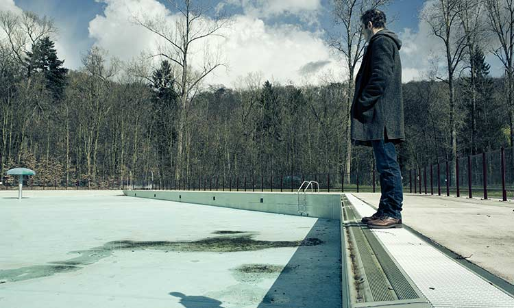
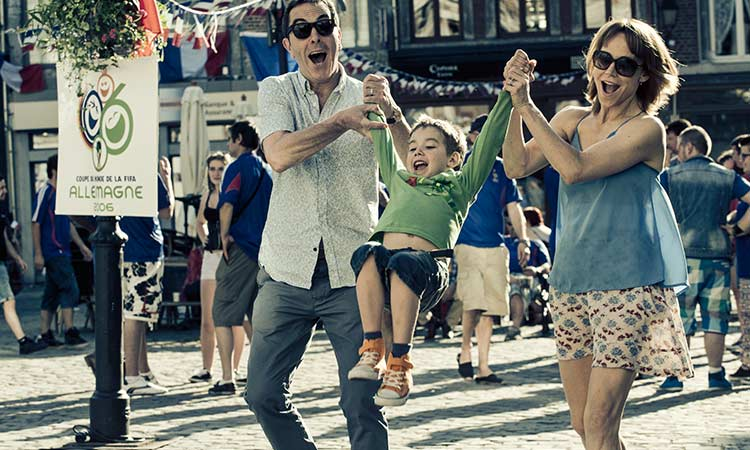
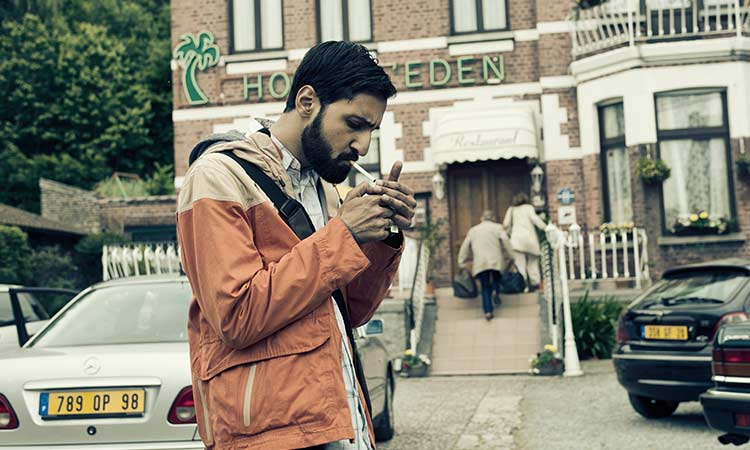
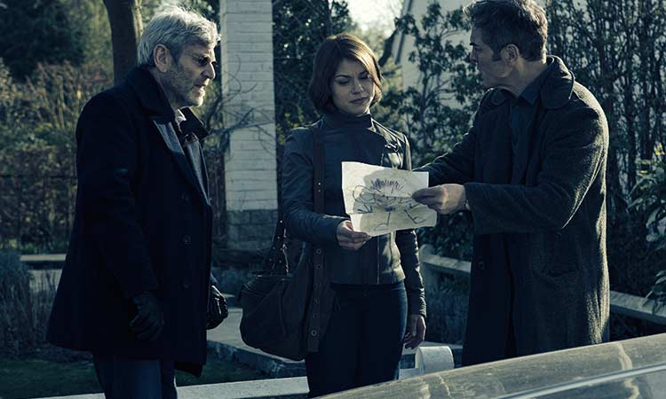
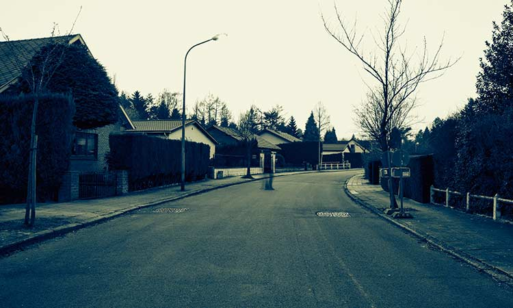
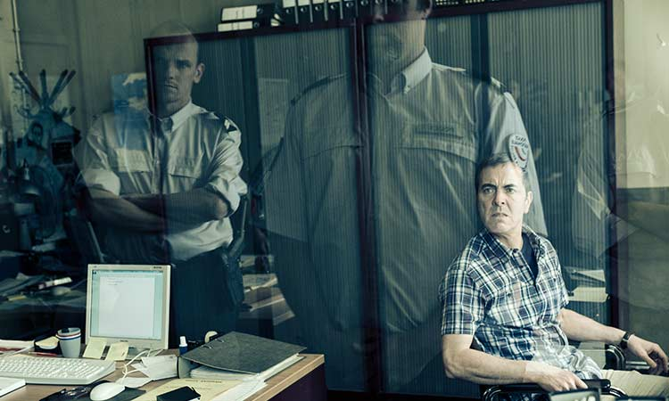
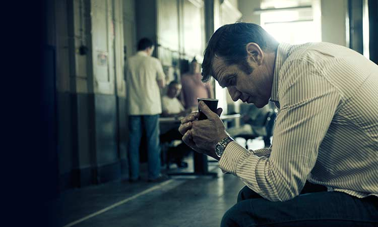
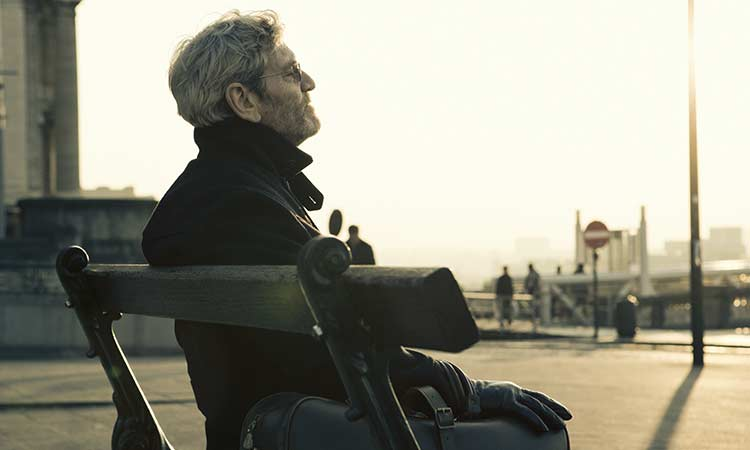
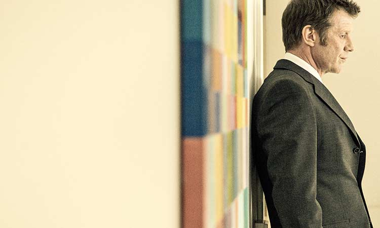
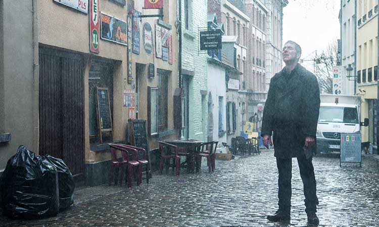
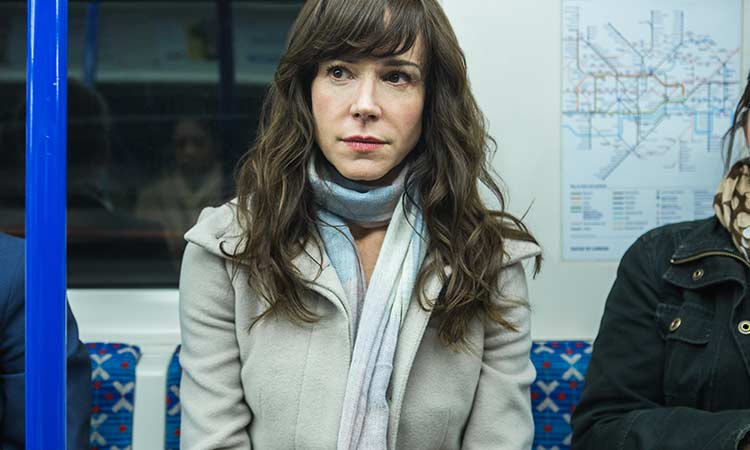
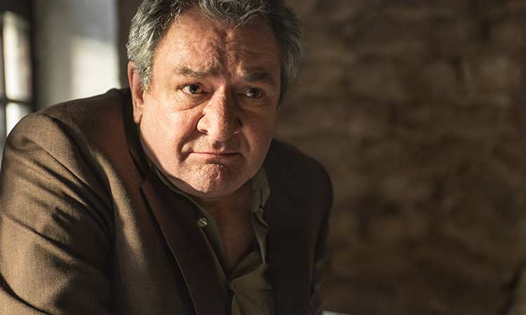
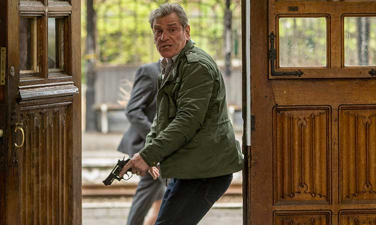
"I came back Emily. Same room and everything. TV still doesn't work. Anyway, I'm here. I thought you should know why..."
"...I've found something."
TONY HUGHES
When five year-old Oliver Hughes disappears while on holiday in France, it sets off a manhunt that will last for years to come. "The Missing," a STARZ Limited Series, is a gripping dramatic thriller that takes you inside the mind of a father, Tony (played by James Nesbitt), desperate to locate his lost son. With help from a local police detective (played by Tcheky Karyo), Tony embarks on an obsessive quest to find his son and those responsible for his disappearance. A gripping puzzle with twists and turns at every stage, Tony's exhaustive search fractures his relationship with his wife, Emily (played by Frances O'Connor), and threatens to destroy his life. Told through a delicate and complex narrative, "The Missing" unfolds over two time frames simultaneously.
"To give someone hope can be a dangerous thing."
- Julien Baptiste
It's the summer of 2006 and the Hughes family, Tony, Emily and five-year-old Oliver, are left stranded in the quaint and beautiful town of Chalons Du Bois when their car fails unexpectedly. But Tony (played by Irish actor James Nesbitt) and Emily (played by Australian actress Frances O'Connor) choose to embrace the moment and check into a family run hotel while they wait for repairs to be completed. The town is abuzz with World Cup frenzy and Tony takes Oliver – nicknamed "Olly" - to a local bar where enthusiastic spectators are engrossed in TV screens broadcasting the quarter final match between France and Brazil. Tony and Olly make their way through the exuberant crowd, and as a goal is scored cheers fill the air... and in that moment, Tony realizes his son is gone. Vanished, without a trace.
Click on a character for more information.
James Nesbitt
A devoted family man, Tony Hughes is looking after his son, Oliver, when he suddenly goes missing while on holiday in France. Tony holds himself responsible for Oliver's disappearance and finds it impossible to move on with his life as he becomes completely consumed with locating his son.
Frances O'Connor
Emily Hughes is Tony's wife and a loving mother to their son, Oliver, whose disappearance leaves her devastated. While she has attempted to move on with her life in the wake of the tragedy, the re-opening of the investigation into Oliver's disappearance threatens to once again emotionally engulf her.
Tchéky Karyo
Julien Baptiste is the lead French investigator in the case of Oliver Hughes' unsolved disappearance. He is the sane, comfortable anchor for Tony and Emily Hughes in the midst of the confusion of a foreign environment. Julien is revealed to be as obsessive as Tony, haunted by a troubled relationship from his past and unable to settle into an easy retirement.
Jason Flemyng
Mark Walsh falls in love with Emily and provides constant support to her during the re-investigation into Oliver's disappearance, even though it puts a strain on their impending marriage.
Ken Stott
Ian Garrett is a warm Englishman who is a wealthy and influential property developer in France. After Oliver disappears, Ian provides support to Tony and Emily and sets up a charity fund to help find their son. But as Ian ingratiates himself more and more into Tony's life, it becomes increasingly unclear what his true motives are.
Titus De Voogdt
Vincent Bourg is a young man and a loner who is desperate to put the past behind him and to define himself as something other than what he feels himself to be.
Émilie Dequenne
Laurence Relaud is a local gendarme who is conscientious and ambitious. Julien Baptiste trusts her by giving her more responsibility on the investigation, and when Tony Hughes resurfaces in France, Laurence does all she can to help him find out what really happened to his son.
Arsher Ali
Malik Suri is an ambitious journalist who takes a keen interest in Oliver Hughes' disappearance. Malik is ruthlessly driven in his mission to obtain information on the case, and is convinced Tony Hughes is hiding a secret.
James Nesbitt
A devoted family man, Tony Hughes is looking after his son, Oliver, when he suddenly goes missing while on holiday in France. Tony holds himself responsible for Oliver's disappearance and finds it impossible to move on with his life as he becomes completely consumed with locating his son.
Frances O'Connor
Emily Hughes is Tony's wife and a loving mother to their son, Oliver, whose disappearance leaves her devastated. While she has attempted to move on with her life in the wake of the tragedy, the re-opening of the investigation into Oliver's disappearance threatens to once again emotionally engulf her.
Tchéky Karyo
Julien Baptiste is the lead French investigator in the case of Oliver Hughes' unsolved disappearance. He is the sane, comfortable anchor for Tony and Emily Hughes in the midst of the confusion of a foreign environment. Julien is revealed to be as obsessive as Tony, haunted by a troubled relationship from his past and unable to settle into an easy retirement.
Jason Flemyng
Mark Walsh falls in love with Emily and provides constant support to her during the re-investigation into Oliver's disappearance, even though it puts a strain on their impending marriage.
Ken Stott
Ian Garrett is a warm Englishman who is a wealthy and influential property developer in France. After Oliver disappears, Ian provides support to Tony and Emily and sets up a charity fund to help find their son. But as Ian ingratiates himself more and more into Tony's life, it becomes increasingly unclear what his true motives are.
Titus De Voogdt
Vincent Bourg is a young man and a loner who is desperate to put the past behind him and to define himself as something other than what he feels himself to be.
Émilie Dequenne
Laurence Relaud is a local gendarme who is conscientious and ambitious. Julien Baptiste trusts her by giving her more responsibility on the investigation, and when Tony Hughes resurfaces in France, Laurence does all she can to help him find out what really happened to his son.
Arsher Ali
Malik Suri is an ambitious journalist who takes a keen interest in Oliver Hughes' disappearance. Malik is ruthlessly driven in his mission to obtain information on the case, and is convinced Tony Hughes is hiding a secret.
Please note that "The Missing" is an eight episode Limited Series. We respectfully request you refrain from including major plot reveals or spoilers in any coverage, including but not limited to material in the episode synopses.
Tony and Emily Hughes' life changes forever when their 5 year old son, Oliver, mysteriously disappears during a family holiday in France, triggering an obsessive, years-long manhunt led by local detective Julien Baptiste.
In 2006, three days after Oliver's disappearance, suspicion falls on a local resident with a past while a generous benefactor comes to the aid of Tony and Emily. In the present day, Tony's attempt to re-open the investigation gathers momentum as he and Julien find the first bit of concrete evidence.
In 2006, the Oliver Hughes investigation continues. Tony remains suspicious of the police's decision to release a potential suspect. Secrets from Tony's past come back to haunt him. Ian Garrett continues to ingratiate his way towards earning Tony's trust. An undercover police officer in Paris provides Julien with a potential lead in the case. In the present day, Oliver's case has now officially been re-opened. Emily attempts to face the demons from her past.
In 2006, the case is thrown into disarray when a key witness is found murdered. Tony is troubled by his relationship with Ian Garrett. In the present day, Julien is intent on re-investigating the connections between a dead witness and Oliver's disappearance. The re-opened case begins to strain Emily and Mark's relationship.
In 2006, Tony and Emily continue to plead that the police investigate a suspected pedophile. Tony decides to take matters into his own hands, despite the consquences. In the present day, Tony and Julien retrace their steps in Paris to learn the whereabouts of someone who could have been connected to Oliver's disappearance.
A riveting and haunting character-driven drama, "The Missing" centers on a desperate eight-year search to find a young boy who suddenly disappears while on holiday in France with his loving parents. While the overarching premise is the actual search for a missing child, the story's compelling narrative examines the intense psychological and emotional toll that one tragic event can have on a family, a community and even law enforcement, whose professional entanglement takes a very personal turn as they seek answers and justice. The gripping, eight-episode STARZ Limited Series also deals with the raw emotions associated with such terrible loss and explores how obsession, excruciating guilt and the chance to redeem one's self can cause a person to lose everything and everyone that they've ever cared for.
It's the summer of 2006 and the Hughes family, Tony, Emily and five-year-old Oliver, are left stranded in the quaint and beautiful town of Châlons Du Bois when their car fails unexpectedly. But Tony (played by Irish actor James Nesbitt) and Emily (played by Australian actress Frances O'Connor) choose to embrace the moment and check into a family-run hotel while they wait for repairs to be completed. The town is abuzz with World Cup frenzy and Tony takes Oliver – nicknamed "Olly" - to a local bar where enthusiastic spectators are engrossed in TV screens broadcasting the quarter final match between France and Brazil. Tony and Olly make their way through the exuberant crowd, and as a goal is scored cheers fill the air... and in that moment, Tony realizes his son is gone. Vanished, without a trace.
The Hughes' lives are turned upside down. Emily is inconsolable; Tony is stricken by a sense of helplessness and yet they must grapple with Olly's disappearance while navigating a country and language that are foreign to them in every sense of the word. A media frenzy ensues, adding to the chaos, as new suspects in the disappearance emerge at every corner.
Executive producer Willow Grylls says, "In the briefest of moments, an environment that felt happy for the Hughes family becomes nightmarish as they attempt to find their son in a country where they neither understand the language nor the rules."
The psychological fallout and exhaustive manhunt unfolds over two different time frames, 2006 and 2014. Viewers are presented with clues from both the past and the present that could lead the family and police to uncover what has happened to young Olly.
Grylls continues: "It is a story that takes place in a world that's familiar which quickly becomes unfamiliar.
That dynamic drives tension through the whole piece. Director Tom Shankland says that he "wanted it to be fundamentally quite authentic and naturalistic so the audience would see the world through the eyes of the characters."
Video 1
Video 2
Starz (NASDAQ: STRZA, STRZB) is a leading integrated global media and entertainment company with operating units that provide premium subscription video programming on domestic U.S. pay television channels (Starz Networks), global content distribution (Starz Distribution) and animated television and movie production (Starz Animation), www.starz.com.
Starz Networks is a leading provider of premium subscription video programming through the flagship STARZ® and ENCORE® pay TV networks which showcase premium original programming and movies to U.S. multichannel video distributors, including cable operators, satellite television providers, a nd t elecommunications c ompanies. As of June 30, 2014, STARZ and ENCORE serve a combined 55.9 million subscribers, including 22.0 million at STARZ, and 33.9 million at ENCORE, making them the largest pair of premium flagship channels in the U.S. STARZ® and ENCORE®, along with Starz Networks' third network MOVIEPLEX®, air more than 1,000 movies monthly across 17 linear networks, complemented by On Demand and authenticated online offerings through STARZ PLAY, ENCORE PLAY, and MOVIEPLEX PLAY. Starz Distribution develops, produces and acquires entertainment content, distributing it to consumers globally on DVD, digital formats and traditional television. Starz Distribution's home video, digital media and worldwide distribution business units distribute original programming content produced by Starz, as well as entertainment content for itself and third parties. Starz Animation produces animated TV and movie content for studios, networks, distributors and audiences worldwide.
Established in April 2013 by Charlie Pattinson New Pictures already has two greenlit shows: The Missing for BBC One and Indian Summers - a ten hour period series set in India for Channel 4. The senior management team includes Elaine Pyke and Willow Grylls and Tommy Bulfin is script editor for the company.
Charlie Pattinson launched Company Pictures in 1998 with George Faber and grew it into one of the UK's largest and most awarded Independent Production Companies.
New Pictures has a first look distribution deal with All3Media International.
Playground, a New York based film, television and theater company, was founded by Emmy and Tony® award winning producer Colin Callender in 2012. Playground is committed to producing quality drama for the stage and screen bringing together the finest US and UK talent from the worlds of theatre, film and television.
Since its inception Playground has produced 35 hours of primetime television in the UK and US including The White Queen (Starz/BBC), Dracula (NBC/Sky), and Dancing on the Edge (BBC/Starz) garnering 6 Golden Globe® and 5 Emmy nominations. Playground is currently in production with the six hour miniseries Wolf Hall (BBC / Masterpiece Theater) based on Hilary Mantel's bestseller starring Mark Rylance and Damian Lewis.
On stage, Playground recently produced the Tony-nominated Casa Valentina from four-time Tony® Award winner Harvey Fierstein and the Tony® Award winning musical revival of Hedwig and the Angry Inch starring Neil Patrick Harris, as well as the critically acclaimed production of Macbeth at The Park Avenue Armory featuring Kenneth Branagh's NY stage debut.
In addition, Playground is in development on a rich slate of film, television and theater projects that draw on the company's deep relations in the NY, London and LA creative communities, including Ken Lonergan's television adaptation E.M. Forster's Howards End and Chris Hampton's series adaptation of Dangerous Liaisons both for the BBC. Recently, Playground announced an agreement with author J.K. Rowling, alongside London stage producer Sonia Friedman, to produce an original stage play based on Harry Potter.
Company Pictures is one of the UK's largest independent film and television drama production companies. Established in 1998 by Charlie Pattinson and George Faber, television production highlights include Elizabeth I (winner of three Golden Globes), all nine series' of Shameless (Channel 4: BAFTA and RTS awards), seven series' of Wild at Heart, six series' of Skins (E4/ Channel 4), seven George Gently films (BBC 1), Generation Kill written by the creators of The Wire (HBO), The Devils Whore (Channel 4: 3 RTS and 2 Broadcasting Press Guild Awards), an adaptation of Martina Cole's best-selling novel The Take starring Tom Hardy and Brian Cox (Sky 1: Best Multi-channel Programme, Broadcast Awards 2009), The Silence (BBC1: AMI Award for Best Television Drama, 2 IFTA Awards and a Crime Thriller Award), The Shadow Line starring Chiwetel Ejiofor, Christopher Ecclestone and Rafe Spall (BBC1); The Village starring John Simm and Maxine Peake (BBC1); Philippa Gregory's The White Queen (BBC1) and the upcoming Wolf Hall starring Mark Rylance, directed by Peter Kosminski (BBC2).
In spring 2013 George Faber and Charlie Pattinson left Company and were replaced by John Yorke as managing director.
In the past Company Pictures has produced The Lakes by Jimmy McGovern, A Young Person's Guide to Being a Rockstar (RTS award Best Serial) for Channel 4 and Warner Bros, North Square (Channel 4: winner Best Series Press Guild), Not Only But Always... (Channel 4: BAFTA winner: Rhys Ifans Best Actor), The Rotters' Club (BBC), and Life and Death of Peter Sellers (HBO: winner of two Golden Globe Awards for Best TV Movie and Best Actor for Geoffrey Rush and 15 Emmies). Company has also made five feature films with some of the UK's leading directing talent including films by Roger Michell, Stephen Hopkins, Penny Woolcock, Shane Meadows and Lynne Ramsey. Amongst its numerous awards Company Pictures won Best Independent Production Company at the 2005 and 2008 Broadcast Awards and the European Producers of the Year Award at the 2004 Monte Carlo Awards.
Since October 2004 Company Pictures has been a part of the All3 Media group.
A new independent company established in late 2012 by Harry and Jack Williams, joined by their Development Producer Sarah Hammond. They recently produced C4's animated sit-com six part series ‘Full English', animated by Rough Draft Studios (Futurama, The Simpsons Movie). Last year they made ‘The Guardians' as a pilot for C4 and are currently shooting ‘Fried', a comedy pilot for the BBC. They are increasingly moving into drama as well as comedy, with a number of original drama commissions already on the slate. They currently have a first look deal with 4DVD.
Please rotate your device or enlarge your screen.